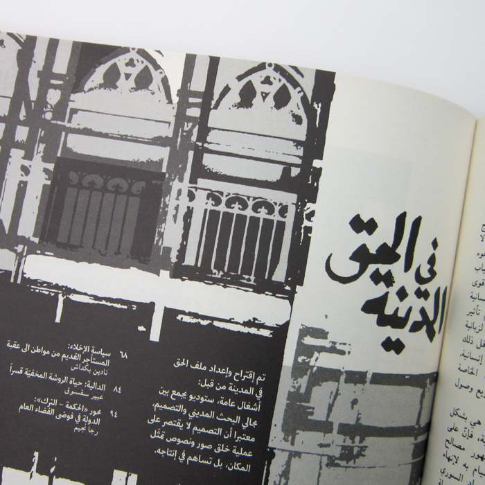

-

Space Production
We regard space production as social processes, imbedded in social practices. We approach the conception and design of identities for emerging places, where local context and site specificities give form to the uniqueness of the visual identity. We aim to produce spaces and buildings that are inclusive and sustainable - as we did when we designed libraries in Palestinian camps, or renovated an office building in Hamra.
-
Communication Campaigns
Creating a campaign is a political act. The images, scenes, narratives, meanings and messages we create are informed by a critical perspective on power relations. Our engagement can stretch to include building coalitions and generating media coverage. We have been involved in various campaigns on different levels: consultancy, conceptualization and implementation.
-

Development Planning
Intervening in space gives shape to social, economic and political formations. With a conviction that urban planning cannot “create” social relations, it can nonetheless pave the way, assess past experiences, offer a lesson from the failures, and give birth to the possible. This is how we approached planning reports for the future of the coast of Saida, the seafront of Ras Beirut, and the industrial site of Miziara in North Lebanon.
-

Publications
We look at publications as constructing narratives and directing content from a critical perspective. It is a process where we make sense of the material and assume a primary position in shaping it. Whether commissioned or self-initiated work, designing publications also involves questioning production, printing and dissemination.
-
Research & Mapping
Mapping is a research method that can offer layered readings to a complex set of data. We have conducted research, collected data, and used mapping to make analyze security measures in Beirut, historical practices of public space in Beirut, and the communal making of popular football fields in the city.
-
Research & Film
Video and animation are meaningful research methods as well as popular platforms to engage wider audiences. Collaborating with Maher Abi Samra on his film on domestic house workers, we investigated the maid’s room, as well as created a mapping for the system of sponsorship. We also collaborated with Juma Hamdo to construct an alternative narrative of the neighborhood of Zkak el Blatt from the perspective of a community living under the old rent law.
-

Research & Writing
Critical discourse on present salient issues in our cities and environments, whether in the form of journal publications, books, debates, lectures, or seminars, predominantly expresses itself in a foreign language. We aim to contribute in producing writings on the city and urban struggles in Arabic; our series of “right to the city” in Bidayat magazine being one of them.
-

Workshops
Youth engagement in thinking through the future of the city is significant in the process of urban change. We conducted training workshops that enabled youth to conduct a combination of field-work and studio training in research on space. Such an activity was meant to bring forth a historically rooted narrative about neighborhoods that have been over-shadowed by market led dominant models.
-
Events & Activities
By distributing what we produce as a collective, we aim to both reflect on our work to further develop it, as well as to stimulate new ideas and visions. We have hence been involved (as individuals) in organizing conferences and talks, such as the rent control conference that took place at AUB or the Dalieh university seminars. We aim to produce more events and activities that would act as platforms for in-depth discussions and for the dissemination of research outcomes.